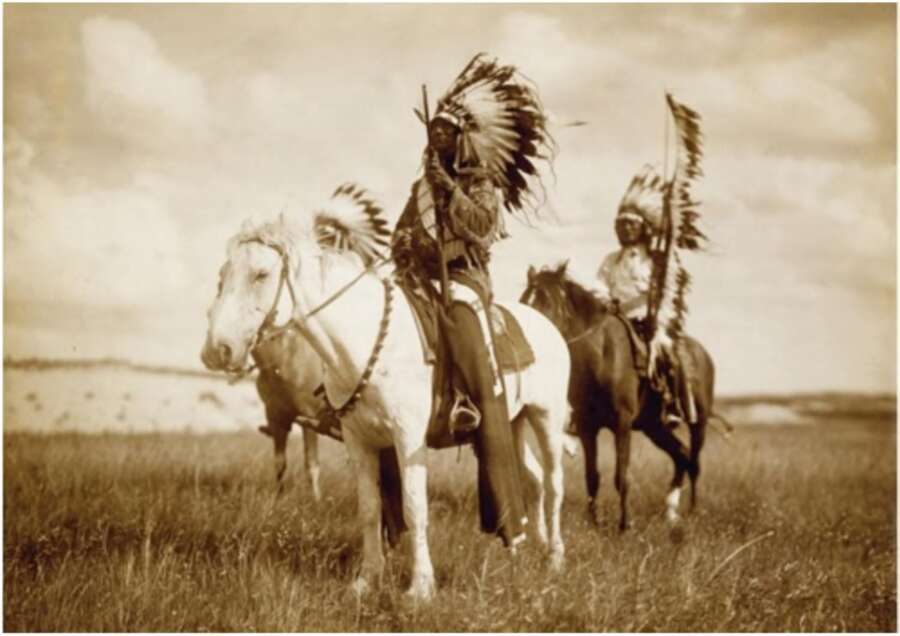

25. Sioux chiefs (1905). Neither the Sioux nor any other Great Plains tribe had horses prior to 1492. Homo sapiens evolved to think of people as divided into us and them. ‘Us’ was the group immediately around you, whoever you were, and ‘them’ was everyone else. In fact, no social animal is ever guided by the interests of the entire species to which it belongs. No chimpanzee cares about the interests of the chimpanzee species, no snail will lift a tentacle for the global snail community, no lion alpha male makes a bid for becoming the king of all lions, and at the entrance of no beehive can one find the slogan: ‘Worker bees of the world — unite!’ But beginning with the Cognitive Revolution, Homo sapiens became more and more exceptional in this respect. People began to cooperate on a regular basis with complete strangers, whom they imagined as ‘brothers’ or ‘friends’. Yet this brotherhood was not _ universal. Somewhere in the next valley, or beyond the mountain range, one could still sense ‘them’. When the first pharaoh, Menes, united Egypt around 3000 xc, it was clear to the Egyptians that Egypt had a border, and beyond the border lurked ‘barbarians’. The barbarians were alien, threatening, and interesting only to the extent that they had land or natural resources that the Egyptians wanted. All the imagined orders
